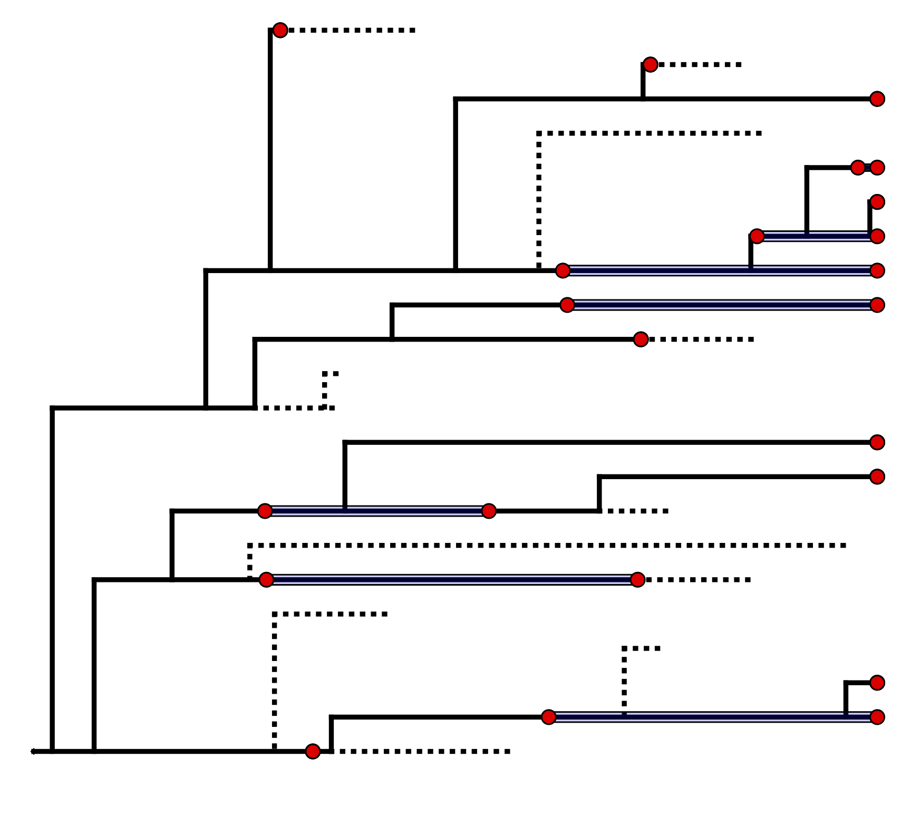
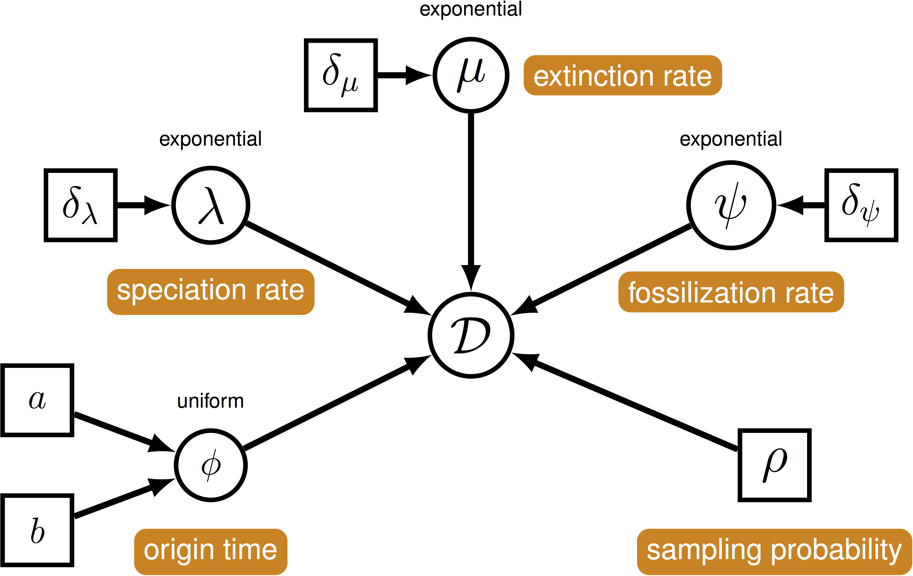
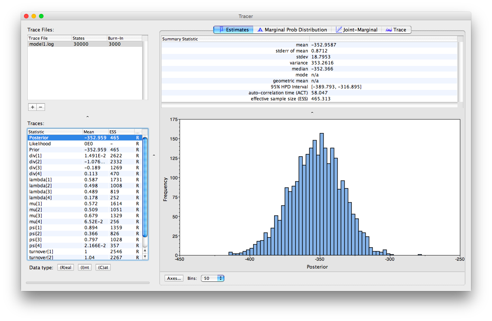
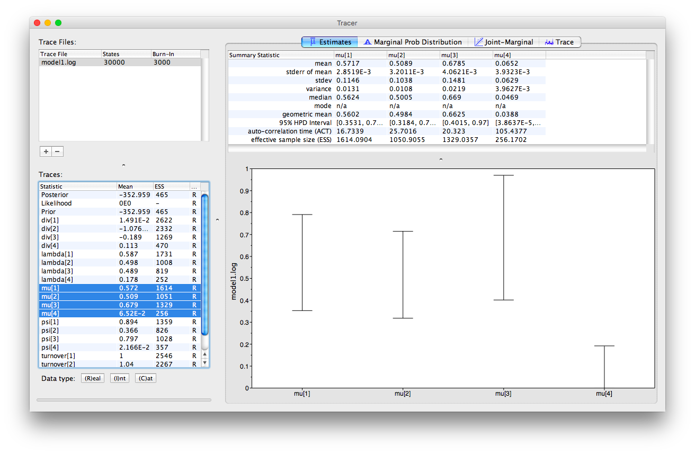
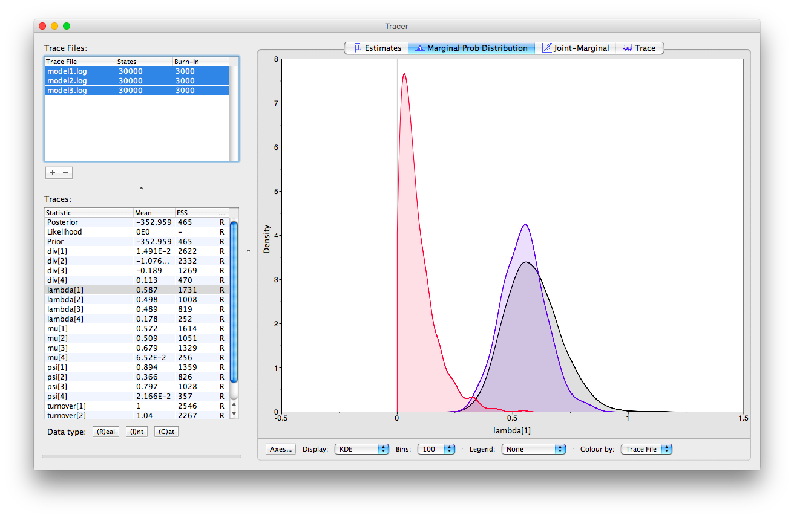
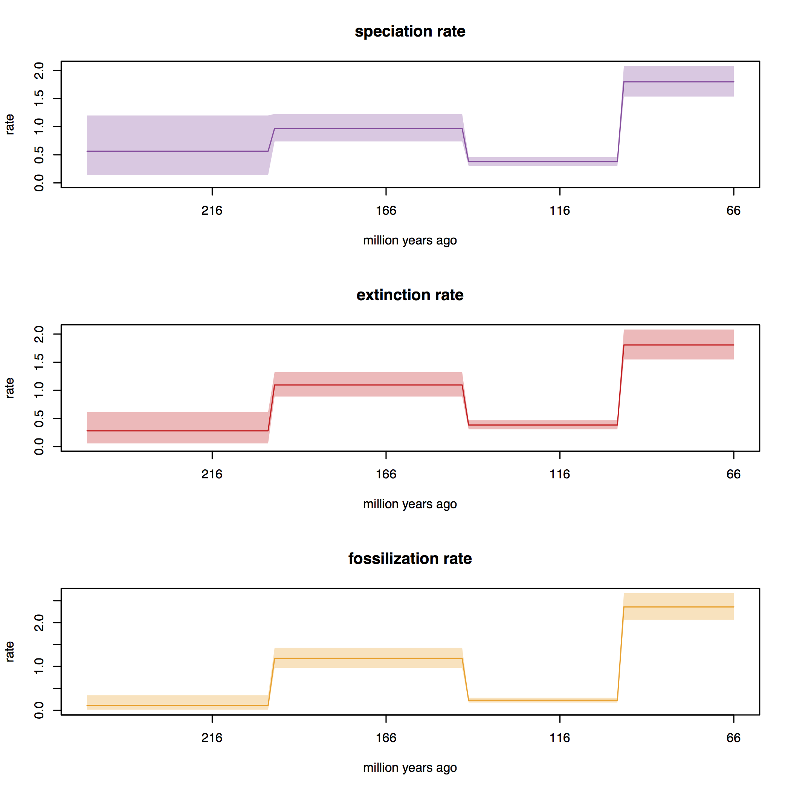

This tutorial demonstrates how to estimate speciation, extinction and sampling rates from stratigraphic range data in a Bayesian framework using the fossilized birth-death range model (Stadler et al. 2018). We begin with a brief description of three available models, which take different information from the fossil record as input in the , followed by a detailed example analysis in demonstrating how to apply these models in RevBayes (Höhna et al. 2017) and use Markov chain Monte Carlo (MCMC) to estimate the posterior distribution of model parameters for a dataset of Mesozoic dinosaur occurrences downloaded from the Paleobiology Database.
Speciation (or origination) and extinction rates are key parameters in macroevolution, and are useful for addressing a wide range of questions in evolutionary biology and paleontology. Knowledge of speciation and extinction rates can help tell us whether a clade was expanding or declining during different geological intervals and provide a starting point for linking diversification parameters to other environmental variables.
Paleontological estimates of speciation and extinction rates are typically obtained from information about fossil sampling times, using a wide range of different methods. A given taxon may be represented by one or more fossil occurrences sampled from discrete geological intervals, and the duration between the first and last appearance is known as the stratigraphic range of the taxon. Of course, the true duration that a taxon existed for over geological time extends beyond the observed stratigraphic range, beginning and ending with the speciation and extinction times of the taxon.
In many stratigraphic range datasets, the phylogenetic relationships between ranges may be unknown (e.g., because no morphological character data has been collected), however, it is reasonable to assume that an underlying phylogenetic brith-death process gave rise to the observed ranges. Furthermore, the distribution of stratigraphic range ages is informative about the underlying phylogenetic parameters, including the rates of speciation, extinction and fossil recovery. In this tutorial we will apply a fossilized birth-death range skyline model to infer these parameters during different geological intervals using stratigraphic ranges as input. The model is closely related to the fossilized birth-death (FBD) model (Stadler 2010) and the fossilized birth-death range (FBDR) model (Stadler et al. 2018) that can be used as a tree prior in a phylogenetic analysis incorporating character data, where the goal is to infer the topology and divergence times, along with the diversification and fossil recovery parameters (e.g., (Heath et al. 2014; Gavryushkina et al. 2017; Zhang et al. 2016)). For more information about these models see the tutorial Total-Evidence Analysis and the Fossilized Birth-Death Process. The model described in this tutorial is referred to as the FBDR Matrix model, since this model takes as input a matrix of stratigraphic range ages and no information about the underlying phylogenetic relationships (e.g., a character alignment or topological constraints).
An important feature of any paleontological database is that we are typically missing an enormous amount of information, since sampling of the geological record is incomplete, highly non-uniform over time and space, and many extinct organisms are never preserved or sampled. A central advantage of applying the FBD (or related) models to the analysis of fossil data is that it explicitly incorporates incomplete species and fossil sampling, and can allow for variation in fossil recovery rates across different geological intervals.
The fossilized birth-death range (FBDR) process described here provides a model for the distribution stratigraphic ranges, which can include extant samples, along with the total lineage duration times ().

We can use this model () to describe the probability of a set of ranges conditional on the birth-death parameters: $f[\mathcal{D} \mid \bar\lambda, \bar\mu, \bar\psi, \rho]$, where $\mathcal{D}$ denotes a summary of the fossil occurrence data and is described in more detail below. The birth-death parameters $\lambda$ and $\mu$ denote the speciation and extinction rates, respectively. The “fossilization rate” or “fossil recovery rate” is denoted $\psi$ and is the rate at which fossils are sampled along lineages. The sampling probability parameter $\rho$ represents the probability that an extant species is sampled. The FBDR skyline model allows rates to vary in a piece-wise manner across different geological intervals and we use $\bar\lambda$, $\bar\mu$ and $\bar\psi$ to denote the vector for each set of rates. The total number of intervals, $l$, and the length of each interval will vary depending on the available stratigraphic data (e.g., total number of fossils and/or ranges) and the biological questions of interest.

The data we observe are fossil occurrences and we use $n$ to denote the total number of sampled ranges. For a given stratigraphic range $i$, the first and last appearance are denoted $o_i$ and $y_i$, respectively. If the first and last appearance are the same (i.e., the species is a singleton), $o_i = y_i$. In addition, each lineage begins and ends at time $b_i$ and $d_i$, respectively. If a species is extant, $y_i = d_i = 0$, and if a species is only sampled at the present, $o_i = y_i = d_i = 0$. Note that for a given range, lineage duration begins at the point at which the range attaches in an incompletely sampled tree, which is not equivalent to the true origination time of the species represented by the range. In constrast, lineage duration ends at the extinction time of the speices.
To account for uncertainty in the relationships among sampled ranges we marginalize over all possible attachment points for each range (Heath et al. 2014). For range $i$, we define $\gamma_i$, which is the number of co-existing lineages at time $b_i$. This allows us to account for topological uncertainty without explicitly sampling the underlying topology.
The data summary for this first model, $\mathcal{D} = ( \{ k_{i,j}, b_i, d_i, o_i \}_{i \in 1…n, j \in 1…l})$, includes per interval fossil counts \(k_{i,j}\), lineage duration times, $b_i$ and $d_i$, and first appearance time $o_i$ for each range. Typically, we do not have information about times $b_i$ and $d_i$, but we can sample these using Markov Chain Monte Carlo (MCMC), thus accounting for the uncertainty associated with these ages. Although the age of the last appearance is not included in our data summary and is not required to calculate the probability of observing our data, it is used to provide an upper limit (maximum age) for the extinction times $d_i$.
Stratigraphic age uncertainty
In most cases the age of a given occurrence will not be known precisely and instead will be known to within some stratigraphic interval. The length of this interval is highly variable but it is an important source of uncertainty in any phylogenetic analysis incorporating fossil data.
In the model described above, only the age of the first appearance, $o_i$, is used in the posterior probability. We can potentially account for specimen age uncertainty in RevBayes by placing a hyperprior on the age of the first appearance, and sample the age of $o_i$ during MCMC (although this is not yet possible using this model). As noted above, the last appearance time, $y_i$, is only used to provide an upper (maximum) bound on the extinction time, $d_i$. Thus, the oldest possible age of the last appearance (i.e., the maximum stratigraphic age associated with the fossil) may be used to specify $y_i$. All other occurrences only contribute to the per-interal fossil count, $k_i$, and so need to be dated at this level of precision.
In the above model, some knowledge about the total number of samples collected during each interval, $k_i$, is required. However, in some cases we may only know the age of the first and last appearance times ($o_i, y_i$), but not the number of occurrences sampled inbetween. In other cases, the number that $k_i$ represents may not be obvious. We can take care of this uncertainty by marginalizing over the total number of fossils between the first and last appearance times for each range. In this version of the model, per-interval fossil counts, $k_i$, are not required. Instead, we define ${\kappa_i^\prime}$, which denotes the total number of occurrences representing first and last appearances within each interval, and the data summary, $\mathcal{D_r} = ( \{ \kappa_{i,j}^\prime, b_i, d_i, o_i \}_{i \in 1…n, j \in 1…l})$.
For some datasets, the age and/or the number of fossil occurrences sampled during each interval may not be known very precisely. Instead we may only know whether a given range was sampled or not within a given interval, but not how many times it was sampled. We refer to this as presence-absence (1/0) sampling. To account for this type of data, we can marginalize over the total number of fossils within each interval, along with the age of first appearance, $o_i$.
We use $\kappa_{S_{i,j}}$ to indicate whether species $i$ was sampled during interval $j$ or not, such that $\kappa_{S_{i,j}} = 1$ if $k_{i,j}>0$ and $\kappa_{S_{i,j}} = 0$ otherwise. Within each interval for which we record a species as having been sampled (i.e., $\kappa_{S_{i,j}} = 1$) we also define $L_{S_{i,j}}$, which is the duration that the species exists within that interval. We denote the data summary, $\mathcal{D_l} = (\{ \kappa_{S_{i,j}}, L_{S_i,j}, b_i, d_i \}_{i \in 1…n, j \in 1…l})$.
More details of the models described above are available here.
For this exercise we will be estimating speciation, extinction and fossil recovery rates for a dataset of dinosaur fossil occurrences, under three variants of the FBDR Matrix model. The goal of this analysis is to examine broad diversification dynamics in this clade during the Mesozoic.
Dinosaur occurrences were downloaded from the Paleobiology Database. The models described in this tutorial can be computationally expensive, especially given a large number of intervals and ranges, so to ensure the analysis runs within a reasonable timeframe, available occurrence data has been subsampled. Specially, we took a random subsample of 116 species that were >66 Ma, associated with <5 Myr stratigraphic age uncertainty and identified at the species level. Fossil ages were also treated as known, taking the mid point between the minimum and maximum age associated with each specimen. Specimens were binned into four intervals of interest: the Early and Late Cretaceous, the Jurassic and the Triassic. Finally, we rescaled the timeline, such that the Cretaceous-Paleogene boundary = the present (i.e., 66 Ma = 0 Ma). This allows us to avoid estimating rates during any interval younger than Cretaceous, which is outwith our period of interest. The script used to generate this dataset is at the top of this page.
On your own computer, create a directory called RB_FBDRMatrix_Tutorial (or any name you like). When you execute RevBayes in this exercise, you will do so within this directory. If you are using a Unix-based operating system, we recommend that you add the RevBayes binary to your path.
Download the data files dinosaur_ranges.tsv and dinosaur_fossil_counts.tsv, which you can find at the top of this page, and place them in this directory.
These files contain the following data:
dinosaur_ranges.tsv: a tab-delimited table listing first and last appearance times for each range. Each row represents a seperate species. Note that for singletons the first and last appearance times will be the same. For extant ranges, including extant singletons, the last appearance time would be 0.0. Important: fossil ages have been rescaled such that 66 Ma = 0 Ma (see for details).
dinosaur_fossil_counts.tsv: a tab-delimited table of fossil occurrence counts. Each row represents a seperate species and each column represents a seperate time interval, from youngest to oldest (that is, left to right). Each cell contains information about species sampling during each interval - this can be the absolute number of times a species was sampled during each interval (required for model 1) or a binary character indicating whether a species was sampled (= “1”) or not (= “0”) during each interval (required for model 3). This file is not required for model 2.
In this exercise you will create a single Rev script for each of the three models described in : mcmc_FBDRMatrix_model1.Rev, mcmc_FBDRMatrix_model2.Rev and mcmc_FBDRMatrix_model3.Rev. Each file will contain all the commands needed to read the data and run the MCMC analysis.
Begin the first Rev script (mcmc_FBDRMatrix_model1.Rev) by loading the stratigraphic ranges from the dinosaur_ranges.tsv using the readTaxonData function.
taxa = readTaxonData(file = "dinosaur_ranges.tsv")
This file contains the taxon names, along with the first and last appearance times. For the purposes of the tutorial, these times will be treated as known.
Next, load the matrix of fossil counts from dinosaur_fossil_counts.tsv using the readDataDelimitedFile function.
k <- readDataDelimitedFile(file = "dinosaur_fossil_counts.tsv", header = true, rownames = true)
In this analysis, our period of interest ends at 66 Ma, which we will rescale to the present day (i.e., 66 Ma = 0 Ma).
Create a vector called timeline for the maximum age of each interval, from youngest to oldest.
RevBayes will assume that the age of the youngest interval = 0.
timeline <- v(100, 145, 201) - 66
These ages represent the boundary between the Early Cretaceous, the Late Cretaceous, and the Jurassic. The oldest occurrence in our dataset is from the Triassic and we will treat the time prior to the Jurassic as a single interval (i.e., 201 Ma - infinity).
The FBDR model parameters speciation, extinction and fossil recovery rates ($\bar\lambda, \bar\mu, \bar\psi$) are our key parameters of interest. Here, we will use the same prior distributions for all rate parameters across all intervals and the same scale moves to sample values from the posterior distribution.
Each rate during each interval is assumed to be drawn independently from a different exponential distribution.
For each rate parameter, we will create an exponentially distributed stochastic node using the ~ operator and the dnExp function, with rate parameter = 10, which has an expected value (mean) of 0.1.
To sample the parameters during MCMC you will assign three scaling moves (mvScale) to each stochastic node, each with a different tuning value (called lambda for mvScale).
The tuning value determines the size of the proposed change and using multiple moves for a single parameter will improve the mixing of the MCMC.
It may also be useful to keep track of the diversification ($\lambda - \mu$) and turnover ($\mu/\lambda$) parameters.
Since these parameters can be expressed as a deterministic transformation of the speciation and extinction rates, we can also monitor these values (that is, keep track of them during MCMC, and print them to a file) by creating deterministic nodes for these parameters for each interval using the := operator.
Before specifying the moves and priors on the model parameters, create a workspace variable called moves.
This variable is a vector containing all of the MCMC moves used to propose new states for every stochastic node in the model graph.
Similarly, we need to create a variable to hold all of our monitors
moves = VectorMoves()
monitors = VectorMonitors()
Next define a constant node representing the rate hyperparameter of the exponential prior distributions on your diversification parameters.
alpha <- 10
Then, write a loop that specifys the priors and moves on the rates during each interval.
for(i in 1:(timeline.size()+1))
{
mu[i] ~ dnExp(alpha)
lambda[i] ~ dnExp(alpha)
psi[i] ~ dnExp(alpha)
div[i] := lambda[i] - mu[i]
turnover[i] := mu[i]/lambda[i]
moves.append( mvScale(mu[i], lambda = 0.01) )
moves.append( mvScale(mu[i], lambda = 0.1) )
moves.append( mvScale(mu[i], lambda = 1) )
moves.append( mvScale(lambda[i], lambda = 0.01) )
moves.append( mvScale(lambda[i], lambda = 0.1) )
moves.append( mvScale(lambda[i], lambda = 1) )
moves.append( mvScale(psi[i], lambda = 0.01) )
moves.append( mvScale(psi[i], lambda = 0.1) )
moves.append( mvScale(psi[i], lambda = 1) )
}
Note that this loop specifies parameters for an additional interval (timeline()+1).
This is for the interval prior to the Jurassic.
For this analysis we will fix the extant species sampling probability ($\rho$) to zero to avoid having to make any assumptions about lineages that may have survived beyond the Cretaceous-Paleogene boundary.
rho <- 0
Because $\rho$ is a constant node, we do not have to assign a move to this parameter.
All three models described in the can be specified using the same distribution function dnFBDRMatrix in RevBayes.
The model used to calculate the likelihood will depend on the data and commands passed to this function.
The dnFBDRMatrix function always takes as input the stratigraphic ranges (taxa), the FBDR model parameters (lambda, mu, psi, rho), and the vector of interval ages (timeline).
The function can optionally take as input the matrix of per-interval fossil counts (k), used by model 1 and 3 only.
The option binary is used to indicate whether the data in matrix k should be interpreted as absolute fossil counts (as in model 1) or presence/absence (1/0) data (as in model 3).
If binary = FALSE the function will implement model 1 and interpret the data in k as absolute fossil counts, which is the default.
If binary = TRUE the function will implement model 3 and use 1/0 data.
If the matrix k contains cells with \(k_{i,j} > 1\), the function will interpret this as $\kappa_{i,j} = 1$.
Model 1 requires both stratigraphic range ages and per-interval fossil counts.
To use model 1 simply include the matrix k, along with the other model parameters and leave binary = FALSE (excluding this argument from the function call is equivalent to specifying the default option).
bd ~ dnFBDRMatrix(taxa=taxa, lambda=lambda, mu=mu, psi=psi, rho=rho, timeline=timeline, k=k)
Model 2 requires stratigraphic range ages only and no information about per-interval fossil counts.
To use model 2 simply exclude the matrix k from the function call.
bd ~ dnFBDRMatrix(taxa=taxa, lambda=lambda, mu=mu, psi=psi, rho=rho, timeline=timeline)
Model 3 requires both stratigraphic range ages and per-interval 1/0 data, which can also be represented by k.
To use model 3 simply include the matrix k, along with the other model parameters and specify binary = TRUE.
bd ~ dnFBDRMatrix(taxa=taxa, lambda=lambda, mu=mu, psi=psi, rho=rho, timeline=timeline, k=k, binary=true)
Add the options for model 1 to your script mcmc_FBDRMatrix_model1.Rev.
# model 1
bd ~ dnFBDRMatrix(taxa=taxa, lambda=lambda, mu=mu, psi=psi, rho=rho, timeline=timeline, k=k)
Next specify scale moves to propose changes to the stratigraphic range start and end times (i.e., $b_i$ and $d_i$).
moves.append( mvMatrixElementScale(bd, lambda = 0.01, weight=taxa.size())
moves.append( mvMatrixElementScale(bd, lambda = 0.1, weight=taxa.size())
moves.append( mvMatrixElementScale(bd, lambda = 1, weight=taxa.size())
moves.append( mvMatrixElementSlide(bd, delta = 0.01, weight=taxa.size())
moves.append( mvMatrixElementSlide(bd, delta = 0.1, weight=taxa.size())
moves.append( mvMatrixElementSlide(bd, delta = 1, weight=taxa.size())
Finally, specify a workspace model variable (mymodel) using the model function.
mymodel = model(alpha)
The object mymodel represents the entire graphical model and allows us to pass the model to the next set of functions specific to our MCMC analysis.
Next, create monitors for the FBDR model parameters speciation, extinction and fossil recovery, along with diversification and turnover.
monitors.append( mnScreen(lambda, mu, psi, div, turnover, printgen=100) )
monitors.append( mnModel(filename="model1.log", printgen=10) )
The mnScreen monitor writes the parameters we specify to the screen every 100 MCMC generations.
The mnFile monitor writes the parameters we specify to file every 10 MCMC generations.
We can also add some additional monitors to generate output that can be used with the R package RevGadets.
# monitors to print RevGagets input
monitors.append( mnFile(filename="output/model1_speciation_rates.log",lambda,printgen=10) )
monitors.append( mnFile(filename="output/model1_speciation_times.log",timeline,printgen=10) )
monitors.append( mnFile(filename="output/model1_extinction_rates.log",mu,printgen=10) )
monitors.append( mnFile(filename="output/model1_extinction_times.log",timeline,printgen=10) )
monitors.append( mnFile(filename="output/model1_sampling_rates.log",psi,printgen=10) )
monitors.append( mnFile(filename="output/model1_sampling_times.log",timeline,printgen=10) )
To run the analysis we have to create a workspace variable that defines our MCMC run using the mcmc function. This function takes the three main analysis components as arguments and we set the move schedule to "random", meaning moves will be chosen at random during the analysis.
mymcmc = mcmc(mymodel, moves, monitors, moveschedule="random")
Finally, we can execute our MCMC analysis and we will set the chain length to 30000 cycles.
mymcmc.run(30000)
q()
Adding q() to the end of the script means the program will exit at the end of the MCMC run.
You’re now ready to run the first analysis!
Begin by running the RevBayes executable. In Unix systems, type the following in your terminal (if the RevBayes binary is in your path):
rb
Provided that you started RevBayes from the correct directory, you can then use the source function to feed RevBayes your script and run the analysis.
source("mcmc_FBDRMatrix_model1.Rev")
This analysis will take around 10 minutes. While you’re waiting for this analysis to run, create the files you need to run the analysis using models 2 and 3: mcmc_FBDRMatrix_model2.Rev and mcmc_FBDRMatrix_model3.Rev.
You can just copy and paste your exisiting script for model 1.
Recall from Section that to use the alternative models you only need to change the arguments passed to the distribution function dnFBDRMatrix.
To use model 2 just remove the argument that passes the fossil count matrix to the function, k=k, since this model doesn’t use any information about the number of fossils sampled during different intervals.
bd ~ dnFBDRMatrix(taxa=taxa, lambda=lambda, mu=mu, psi=psi, rho=rho, timeline=timeline)
For this model, you also don’t need to read the maxtrix represented by k, so you can remove the line that reads this file using readDataDelimitedFile from the script.
Make these modifications in mcmc_FBDRMatrix_model2.Rev, and when model 1 is done, open RevBayes and run the analysis as before.
source("mcmc_FBDRMatrix_model2.Rev")
To use model 3, we still include the argument that passes the fossil count matrix to the function, k=k, and switch the argument binary=true to binary=false, since this model uses 1/0 sampling information, rather than absolute occurrence counts. The k matrix is still required for this model.
bd ~ dnFBDRMatrix(taxa=taxa, lambda=lambda, mu=mu, psi=psi, rho=rho, timeline=timeline, k=k, binary=true)
Make these modifications in mcmc_FBDRMatrix_model3.Rev, and when you’re ready, run the analysis as before.
source("mcmc_FBDRMatrix_model3.Rev")
While you’re waiting for model 2 and 3 to run you can examine the output from model 1.
Running this model under the prior
To run this model under the prior, we can’t use the conventional approach in RevBayes of passing the argument
runUnderPrior=trueto themymcmc.runcommand.Instead, we will simply comment out the creation of the
bdstochastic node and its associated moves, and instead create a workspace model variable by passingalphato themodelfunction.#bd ~ dnFBDRMatrix(taxa=taxa, lambda=lambda, mu=mu, psi=psi, rho=rho, timeline=timeline, k=k, binary=true) #moves.append( mvMatrixElementScale(bd, lambda = 0.01, weight=taxa.size()) #moves.append( mvMatrixElementScale(bd, lambda = 0.1, weight=taxa.size()) #moves.append( mvMatrixElementScale(bd, lambda = 1, weight=taxa.size()) #moves.append( mvMatrixElementSlide(bd, delta = 0.01, weight=taxa.size()) #moves.append( mvMatrixElementSlide(bd, delta = 0.1, weight=taxa.size()) #moves.append( mvMatrixElementSlide(bd, delta = 1, weight=taxa.size())mymodel = model(alpha)This allows us to sample the prior distribution on our FBDR model parameters.
During the MCMC analysis RevBayes will output parameters of interest (defined using the monitors vector) to the screen and the user-specified output file (model1.log, model2.log, model3.log).
We can examine the log files in the program Tracer. Once you open this program, you can open the log files using the “File > Import Tracer File” option, navigate to the directory in which you ran the analysis (RB_FBDRMatrix_Tutorial) and select the relevant log file (e.g., model1.log). Or you can simply drag and drop the files into “Trace Files” (the empty white box on the upper left of the program). Take a look at the output obtained for model 1.

RevBayes outputs the parameter estiamtes for each interval from youngest and to oldest.
This is the same order they were specified in the vector (timeline) in , and also the order in which the intervals appear in the input file dinosaur_fossil_counts.tsv.
In this analysis the youngest interval (the Cretaceous) is denoted 1 and the oldest interval is denoted 4.
In Tracer, we can select multiple parameters simultaneously.
If we select all the estimates for mu, we can look at the 95% HPD intervals obtained for each interval.

We can also examine multiple log files simultaneously in Tracer and examine the overlap between estimates obtained using different models. If you load all three log files into Tracer and navigate to the “Marginal Prob Distribution” window at the top and at the bottom of the appliaction select the “Colour by > Trace File” option, you can see the marginal posterior obtained for a given parameter using each model in different colours.

You can also assess the mixing of the MCMC in Tracer, taking advantage of the “Trace” window. Note that the ESS values for some parameters are a little low. Ideally, we would run the MCMC for longer.
We can also examine and manipulate the log files using other software, such as R.
At the top of the page you will find an R script skyline_plots_FBDRMatrix.R.
This script contains commands that can be used to generate so-called skyline plots.
These plots show the posterior rates estimated during each interval.
Open R and set the working directory to the directory in which you performed the analyis, RB_FBDRMatrix_Tutorial. Run the commands in this script to produce a set plots for each model that you ran.

Discussion points
The estimates we obtained for speciation, extinction and sampling using different models are quite different. Why do you think this might be? What does this mean in terms of interpreting our results?
Note that the key FBDR model parameters - speication, extinction and fossil recovery rates ($\lambda, \mu, \psi$ - appear to be elevated during interval 1 (i.e., the Cretaceous). Does this seem like a reasonable result? Are there any bio/geological reasons that we would expect to see this? How could we go about further testing this?